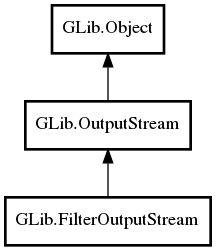

GLib.FilterOutputStream Reference Manual
Packages
gio-2.0
GLib
FilterOutputStream
base_stream
close_base_stream
FilterOutputStream
get_base_stream
get_close_base_stream
set_close_base_stream
FilterOutputStream
Object Hierarchy:

Description:
public
abstract
class
FilterOutputStream
:
OutputStream
All known sub-classes:
BufferedOutputStream
ConverterOutputStream
DataOutputStream
Namespace:
GLib
Package:
gio-2.0
Content:
Properties:
public
OutputStream
base_stream
{
construct
set
;
get
; }
public
bool
close_base_stream
{
construct
set
;
get
; }
Creation methods:
protected
FilterOutputStream
()
Methods:
public
weak
OutputStream
get_base_stream
()
public
bool
get_close_base_stream
()
public
void
set_close_base_stream
(
bool
close_base)